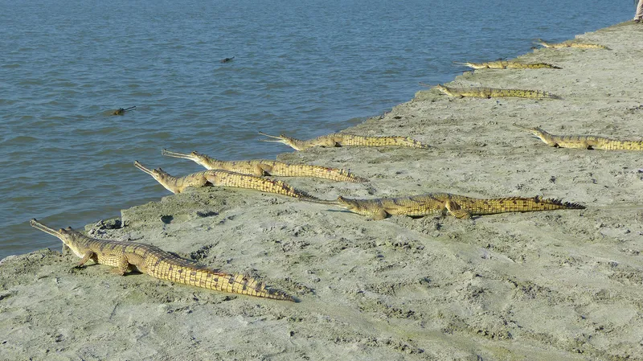
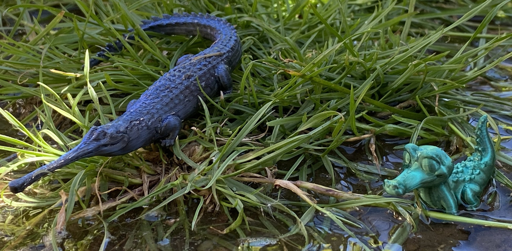

Gharials

- Gharials are a type of crocodile.
- They have a long narrow snout, with a bobbly and bumpy nose.
- They are found primarily in the rivers of India along the Ganges and Brahmaputra rivers.
- They are my favourite crocodile.
- Gharials are really cool because they are non-aggressive and play a vital role in their ecosystem.
